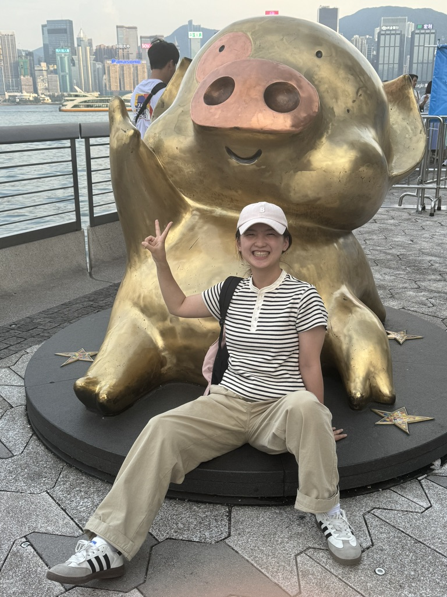
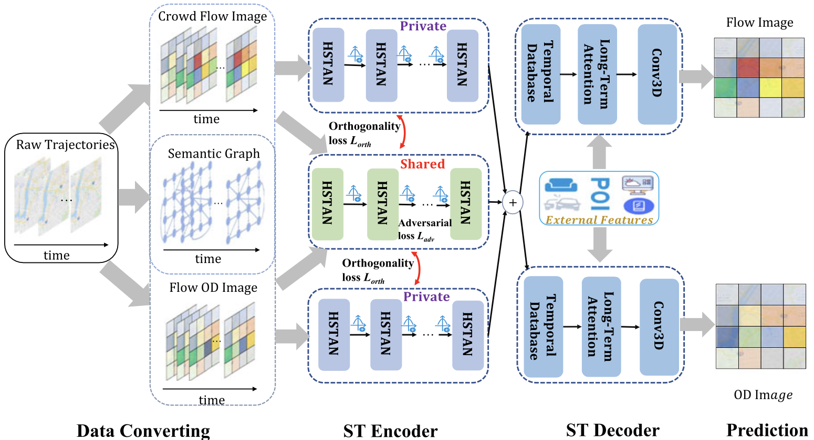
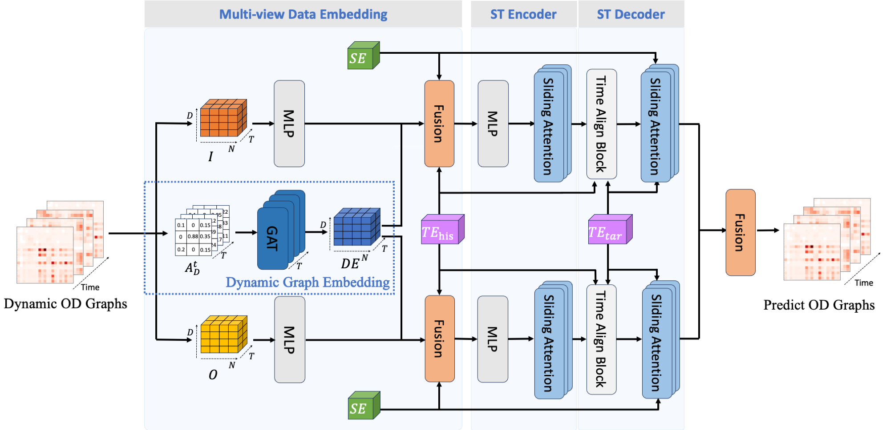

|
I am a first-year Ph.D. student at the University of Georgia, under the mentorship of Prof. Ninghao Liu. I obtained my bachelor’s degree in Software Engineering at Nanchang University. And I received Master's degree from the School of Computer Science at Central South University, under the mentorship of Prof. Senzhang Wang. My current research interests include:
UGA / Gmail | Google Scholar | GitHub |
 |
{kind=link}
News
| 2024/08 - I joined the DLGA lab at the University of Georgia as a research assistant. |
Selected Papers
|
*Equal contribution. |
Spatio-temporal data Mining
|
|
(JMLC), International Journal of Machine Learning and Cybernetics, 2022. [Paper] |
|  |
(TKDE), IEEE Transactions on Knowledge and Data Engineering, 2022. [Paper] |
|  |
(DASFAA), Database Systems for Advanced Applications, 2024. |
Recommendation System
|
(TKDE), IEEE Transactions on Knowledge and Data Engineering, 2023. [Paper] |
Work Experience and Internships
| Nov 2022 - Apr 2023, Research Assistant, The Hong Kong Polytechnic University (Applied Biology and Chemical Technology). |
| May 2023 – Jan 2024, Research Assistant, The Hong Kong Polytechnic University (PolyU Academy for Interdisciplinary Research). |